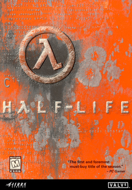

Developer: Valve Corporation
Release date: November 16, 1998
Genre: Science Fiction, First-Person Shooter
About the game:
Half-Life is a science fiction first-person shooter game developed by Valve Corporation. It follows the story of Gordon Freeman, a theoretical physicist who becomes trapped in a secret laboratory.
What I liked about the game:
The gunplay while not the most amazing, works well enough for the style of play that is moving fast and having to make decisions on the fly. It's also cool how the world seems seamless as you don't just have a loading screen taking you to another spot.